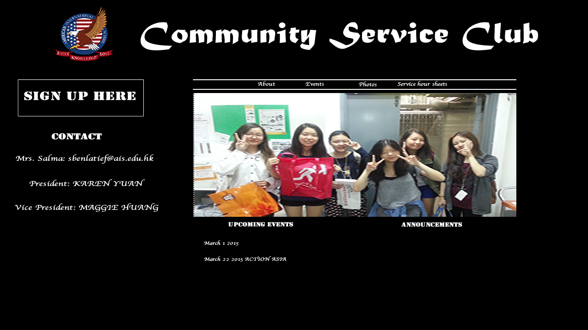
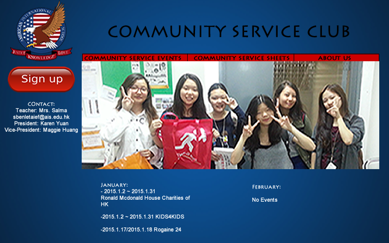
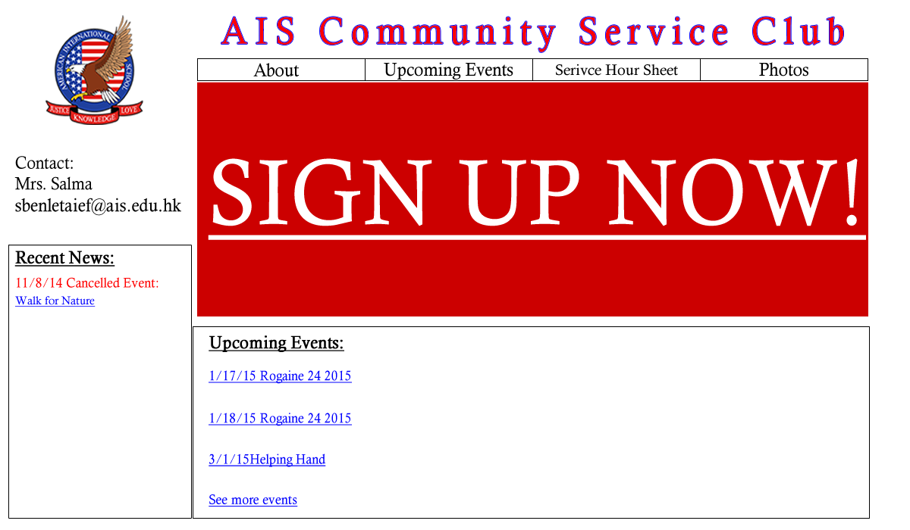

Idea 1

Idea 2

Idea 3

Idea 4

We discussed in the group, and decided to use Idea 1 because we want to put Sign Up button on the upper left to get attention from the user.
We started creating the storyboard based on the wireframe we chose.
 Judy said we should change the main picture because the picture does not show the aspect of community service that much.
We also talked with Mr. Chiu, and realized the picture takes most part of the homepage, even it is not the most important thing for the homepage.
Since we want to emphasize sign up link the most, we should make sign up link button larger.
Strengths
Weaknesses
Strengths
Weaknesses